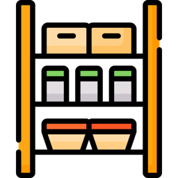

Encontro 05
Valores em dinheiro e primeiras listas
Hoje vamos ajustar os valores da conta, montar o menu de pagamento e começar a usar listas.
A conta do encontro anterior
Ontem vocês chegaram à parte 4 da atividade Fechando a conta, com o bônus de sugerir um caldo.
Vamos terminar o programa e ajustar como ele mostra os valores em dinheiro.

Aquecimento · 15 minutos
Terminar a conta de ontem
- Abrir o arquivo
conta.pyna pasta do curso. - Terminar a parte 4. Sugerir um caldo se o cliente não tiver pedido nenhum.
- Executar com 1 pastel, 1 caldo e nenhum sorvete. Escolher
pixno pagamento. - Executar com 2 de cada item e pagamento no
pix. - Anotar os dois totais num comentário do
conta.py.

O total deu R$ 11.875. Quanto cobrar?
Com 2 de cada item no pix, apareceu 38.949999999999996. De onde vieram essas casas?
Por que aparecem tantas casas decimais?
11.875
38.949999999999996
Testar print(0.1 + 0.2) no terminal ou no shell. O resultado também mostra essa aproximação.
Arredondar com round
print(round(11.875, 2)) print(round(38.949999999999996, 2)) print(round(28.0, 2))
11.88 38.95 28.0
- Em
round(valor, 2), o primeiro argumento é o valor. O segundo indica as casas decimais. - O resultado foi arredondado. Para mostrar
28.00no lugar de28.0, vamos ajustar a formatação.
Colocar valores no texto com f-string
print("Total: R$", total)
print(f"Total: R$ {total}")
- O
fantes das aspas permite colocar valores dentro do texto. - O valor de
totalaparece no lugar de{total}. As chaves delimitam essa parte. - As duas versões mostram o total. Na f-string, escrevemos a frase inteira entre as aspas.
Mostrar duas casas decimais com :.2f
total = 28.0 print(f"Total: R$ {total:.2f}") total = 11.875 print(f"Total: R$ {total:.2f}")
Total: R$ 28.00 Total: R$ 11.88
- O
:.2fformata o valor com duas casas depois do ponto. - A formatação acrescenta zeros ou arredonda a exibição conforme o valor.
- A variável mantém o valor original. A formatação muda apenas o texto mostrado.
Prática · 10 minutos
Ajustar os valores da conta
- No
conta.py, usar f-string com:.2fnos valores em dinheiro. - Guardar o total do pix com
round(valor, 2)depois de aplicar o desconto. - Executar com 1 pastel e 1 caldo no pix. Conferir o total
11.88. - Executar com 2 de cada item no pix. Conferir o total
38.95.

Vocês digitaram Pix ou cartão e o programa recusou?
"Pix" e "pix" são textos diferentes. Com opções numeradas, o cliente digita só o número.
Escrever várias linhas com aspas triplas
print(""" Forma de pagamento: 1 - Pix (5% de desconto) 2 - Cartão 3 - Dinheiro """)
Forma de pagamento: 1 - Pix (5% de desconto) 2 - Cartão 3 - Dinheiro
- Abrimos e fechamos o texto com três aspas. As quebras de linha fazem parte do texto.
- Assim, um único
printmostra as linhas do menu.
Ler a opção escolhida no menu
opcao = input("Escolha 1, 2 ou 3: ") if opcao == "1": total = round(total * 0.95, 2) print(f"Total no pix: R$ {total:.2f}") elif opcao == "2": print(f"Total no cartão: R$ {total:.2f}")
O input devolve texto. Por isso comparamos com "1", entre aspas. A comparação "1" == 1 dá False.
Prática · 15 minutos
Criar o menu de pagamento
- No
conta.py, trocar a pergunta do pagamento por um menu com aspas triplas. - Comparar a opção com
"1","2"e"3". Para outra resposta, mostrarOpção inválida. - Usar aspas triplas para mostrar o cardápio do início num único
print. - Testar 1 pastel e 1 caldo com a opção
3e R$ 20 recebidos. Conferir o trocoR$ 7.50.
E se o cardápio tiver 20 itens?
pasteis = int(input("Quantos pastéis? ")) caldos = int(input("Quantos caldos? ")) sorvetes = int(input("Quantos sorvetes? ")) subtotal = pasteis * PRECO_PASTEL + caldos * PRECO_CALDO + sorvetes * PRECO_SORVETE
- Nesse código, cada item tem uma variável de quantidade e um
input. - Para incluir 20 itens, teríamos que aumentar também a expressão do subtotal.
Podemos guardar vários itens juntos, como os pedidos anotados numa comanda.
Guardar os itens numa lista
comanda = ["pastel", "caldo", "sorvete"] print(comanda) print(len(comanda))
- Criamos a lista com colchetes e separamos os valores com vírgulas.
len(comanda)conta os itens da lista. Neste exemplo, o resultado é3.
A primeira posição da lista é zero
comanda = ["pastel", "caldo", "sorvete"] print(comanda[0]) print(comanda[2]) print(comanda[5])
pastel sorvete IndexError: list index out of range
- Chamamos a posição de índice.
[0]acessa o primeiro item e[2]acessa o terceiro. - O índice
5não existe nessa lista. Por isso apareceIndexError.
Acrescentar um item com append
comanda = [] item = input("O que vai querer? ") comanda.append(item) item = input("Mais alguma coisa? ") comanda.append(item) print(f"Comanda: {comanda}")
- Criar
anota.pyna pasta do curso com o código do exemplo. - Executar o arquivo e responder
pastel, depoiscaldo. - Conferir a saída
Comanda: ['pastel', 'caldo'].
[] cria uma lista vazia. Cada chamada de append acrescenta um item no final.
Retirar um item com remove
comanda = ["pastel", "caldo", "sorvete"] comanda.remove("caldo") print(comanda) comanda.remove("pudim")
['pastel', 'sorvete'] ValueError: list.remove(x): x not in list
- O
removeprocura o valor informado e retira a primeira ocorrência. - Se o valor não estiver na lista, aparece
ValueError. Vamos conferir antes de remover.
Conferir se o item está na lista com in
comanda = ["pastel", "caldo", "sorvete"] item = input("Qual item vai tirar? ") if item in comanda: comanda.remove(item) print(f"Comanda: {comanda}") else: print("Esse item não está na comanda.")
item in comandadáTruequando o valor está na lista eFalsequando não está."caldo" not in comandadáTruese não houver caldo na lista.
Somar os valores da lista com sum
precos = [8.5, 6.0, 7.0] total = sum(precos) print(f"Itens: {len(precos)}") print(f"Total: R$ {total:.2f}")
Itens: 3 Total: R$ 21.50
- Nesta lista, guardamos preços.
sum(precos)soma os valores. - Se acrescentarmos preços à lista, a chamada de
sumcontinua igual.
Exercícios para continuar praticando
Abrir o gerador de desafios pelo QR code ao lado.
Vocês podem usar os exercícios quando terminarem a atividade ou para praticar em casa.
Para abrir no computador, usar claude.ai/artifact/BfMtVw7XiYYgwEYig3t44w
Atividade: montar a lista de compras
Vamos criar compras.py para registrar o que falta comprar na lanchonete e calcular os gastos.
- Fazer as quatro partes na ordem, cada um no seu arquivo.
- Executar e conferir cada parte antes de começar a próxima.
- Mostrar os valores em dinheiro com duas casas decimais.

A lista de compras · partes 1 e 2
Atualizar a lista de compras
["farinha", "queijo", "carne"]. Pedir mais um item e acrescentar à lista. Mostrar a lista e a quantidade de itens.Isso não estava na lista.A lista de compras · partes 3 e 4
Calcular os gastos
Testar os preços 12.50, 30 e 7.25 com orçamento de 45. O gasto passa do orçamento em R$ 4.75.
O que vocês praticaram hoje
round(valor, 2)devolve o valor arredondado.:.2fmostra duas casas no texto.- Na f-string, o
fvem antes das aspas e a variável vai entre chaves. - Usamos aspas triplas para escrever as linhas do menu num único texto.
- A lista reúne vários valores. O índice do primeiro item é zero.
- Praticamos como acrescentar e remover itens, conferir se estão na lista, contar e somar.
Sexta, às 19h: vamos retomar as listas numa atividade. Depois, usar o for para percorrer os itens.